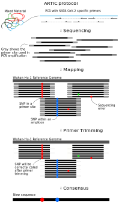

4 Consensus assembly
- Recognise what the main steps are in processing raw sequencing data to generate consensus genome sequences, including sequence alignment, primer trimming and consensus generation.
- Recognise the differences between Illumina and Nanopore pipelines.
- Apply the
nf-core/viralreconNextflow pipeline to generate a consensus sequence from Illumina and Nanopore data.
4.1 SARS-CoV-2 Consensus Assembly
As we discussed earlier in the course, the starting material for sequencing SARS-CoV-2 samples from infected patients is PCR-amplified DNA generated with a panel of primers that covers the whole SARS-CoV-2 genome (for example the primers developed by the ARTIC network). This material can then be sequenced using either Illumina or Nanopore platforms.
Although different sotware tools are used depending on which kind of sequencing platform was used, the main goal is the same: to align the sequencing reads to the reference genome, and identify any DNA changes (SNPs or Indels) relative to the reference genome (Wuhan-Hu-1). This is called consensus assembly, since we are assembling the genome of our sample from the PCR-amplified fragments and generating a consensus sequence based on changes present in several reads covering a particular position of the genome.
The general data processing steps are:
- Filter high-quality sequencing reads.
- Map the reads to the Wuhan-Hu-1 reference genome.
- Trim the primers from the aligned reads based on the primer location file (BED file).
- Perform variant calling (SNPs and indels) to identify changes relative to the reference sequence.
- Generate a consensus sequence for the sample based on those variants.

Primer trimming is a key step of the data processing, otherwise SNPs might be missed at the primer sites, on the final consensus sequence. This is because the primer sequence is retained during PCR instead of the original sequence of the sample. Because the PCR amplicons overlap with each other, we can trim the primers from each read and do variant calling after trimming. An example of this is shown in the Figure above.
4.2 Bioinformatic Workflows/Pipelines
As can already be seen from the brief description above, bioinformatic analyses always involve multiple steps where data is gathered, cleaned and integrated to give a final set of processed files of interest to the user. These sequences of steps are called a workflow or pipeline. As analyses become more complex, pipelines may include the use of many different software tools, each requiring a specific set of inputs and options to be defined. Furthermore, as we want to chain multiple tools together, the inputs of one tool may be the output of another, which can become challenging to manage.
Although it is possible to code such workflows using shell scripts, these often don’t scale well across different users and compute setups. To overcome these limitations, dedicated workflow/pipeline management software packages have been developed to help standardise pipelines and make it easier for the user to process their data.

Two of the most popular workflow software packages are Snakemake and Nextflow. We will not cover how to develop workflows with these packages, but rather how to use an existing workflow to generate consensus sequences from SARS-CoV-2 data.
Why Use a Standardised Workflow?
These are some of the key advantages of using a standardised workflow for our analysis:
- Fewer errors - because the workflow automates the process of managing input/output files, there are less chances for errors or bugs in the code to occur.
- Consistency and reproducibility - analysis ran by different people should result in the same output, regardless of their computational setup.
- Software installation - all software dependencies are automatically installed for the user using solutions such as Conda, Docker and Singularity (more about these in a later section of the course).
- Scalability - workflows can run on a local desktop or scale up to run on high performance compute clusters.
- Checkpoint and resume - if a workflow fails in one of the tasks, it can be resumed at a later time.
4.3 SARS-CoV-2 Pipeline
To generate consensus SARS-CoV-2 genomes from these data, we will use a pipeline that was developed by the Nextflow core team called nf-core/viralrecon (which was itself inspired by a previous pipeline from the Connor Lab). Its objective is to harmonise the assembly of SARS-CoV-2 genomes from both Illumina and Nanopore amplicon sequencing data. It can also work with metagenomic data, which we will not cover in this workshop. This pipeline therefore includes different sub-pipelines, which are launched depending on the type of sequence data we have. Watch the video below to learn more about the development of this pipeline.
Generally speaking, Nextflow pipelines are run with the command nextflow run PIPELINE_NAME, where “PIPELINE_NAME” is the name of the pipeline. Pipelines are usually shared in a public repository such as GitHub, and nextflow will automatically download the pipeline if it hasn’t been downloaded already to your computer.
Let’s test our pipeline by looking at its help documentation:
nextflow run nf-core/viralrecon -r 2.6.0 --helpThe command should print a long list of options available with this pipeline. For pipelines developed by the Nextflow core team you can also consult the documentation available online, which is easier to read: nf-co.re/viralrecon. This page includes many details about the pipeline: which tools are used in different steps of the data processing, how to use the pipeline for different types of data, a detailed documentation of all the options of the pipeline and explanation of the output files generated by it.
Below, we give an overview of the pipelines used for Illumina and Nanopore amplicon data.
The Wuhan-Hu-1 reference genome sequence and the amplicon primer locations (in BED file format) can all be found on the ARTIC Primer Schemes repository. The pipeline we are using takes care of downloading these files for us automatically, however it can be useful to know where to find them, in case you want to use other tools that require these files.
The Illumina sub-workflow is based on several standard bioinformatic tools and, importantly, on the iVar software, which was developed for analysing amplicon-based sequencing data.

To run the pipeline on Illumina data, we use the following general command:
nextflow run nf-core/viralrecon
-r 2.6.0 -profile singularity \
--platform illumina \
--input SAMPLESHEET_CSV \
--outdir OUTPUT_DIRECTORY \
--protocol amplicon \
--genome 'MN908947.3' \
--primer_set artic \
--primer_set_version PRIMER_VERSION \
--skip_assembly --skip_asciigenome \
--skip_pangolin --skip_nextclade One of the key options is --platform illumina, which makes sure that the correct sub-workflow will be used.
Click to see more details about this sub-workflow
In summary, the steps performed by the Illumina sub-workflow are:
- Adapter trimming - this consists of trimming (or “cutting”) the sequences to remove low-quality bases and any Illumina adapter sequences that are present in the sequences.
- Removing human (host) reads - when doing the sequencing it is possible that many reads are still from human material and this step removes them from the rest of the analysis.
- Read mapping - aligning (or mapping) the reads to the Wuhan-Hu-1 reference genome.
- The software used for mapping is
bowtie2. - The software
samtoolsis used to convert the mapped file to BAM (instead of SAM) and sort the reads by coordinate (which is necessary for downstream steps).
- The software used for mapping is
- Trim Primers - primers are removed from the aligned reads using
ivar trim(using the primer BED file). - Call variants - identify SNPs and indels using
ivar variants. - Annotate variants - the called variants are annotated according to their potential effect on the genes/proteins they are located in. For example, if a mutation introduces a new stop codon, or causes a frameshift.
- Make consensus - apply the SNPs and indels from the previous step to the reference FASTA file.
- There are two tools that can be used in this step:
bcftools consensus(default) orivar consensus(can be set with the option--consensus_caller ivar).
- There are two tools that can be used in this step:
- Lineage assignment - the consensus sequences are assigned to lineages or clades using the
pangolinandnextcladeprograms. These are two of the main lineage/clade nomenclature systems in use. They also identify variants of concern from the consensus sequences. - Quality control - at several steps in the pipeline different tools are used to collect quality metrics and these are compiled into a report using
multiqc.
The nanopore sub-workflow is based on the ARTIC bioinformatics protocol and uses several of the tools from the accompanying artic software package.
This sub-workflow is similar to the other nanopore sub-workflow, the main difference is the software used for generating a consensus sequence (medaka instead of nanopolish).

To run our pipeline on basecalled data (FASTQ files), we use the following command:
nextflow run nf-core/viralrecon \
-r 2.6.0 -profile singularity \
--platform nanopore \
--input SAMPLESHEET_CSV \
--fastq_dir fastq_pass/ \
--outdir OUTPUT_DIRECTORY \
--protocol amplicon \
--genome 'MN908947.3' \
--primer_set artic \
--primer_set_version PRIMER_VERSION \
--artic_minion_caller medaka \
--artic_minion_medaka_model MEDAKA_MODEL \
--skip_assembly --skip_asciigenome \
--skip_pangolin --skip_nextclade Some of the key options are:
--platform nanoporemakes sure that the correct sub-workflow will be used.--artic_minion_caller medakaindicates we want to use themedakaprogram to do the variant/consensus calling (directly from the basecalled FASTQ files, rather than from the raw signal in the FAST5 files).--artic_minion_medaka_modelspecifies the model used by theguppy_basecallersoftware to do the basecalling. The model name follows the structure{pore}_{device}_{caller variant}_{caller version}. See more details about this in the medaka models documentation. Note: for recent versions of Guppy (>6) there is no exact matching model frommedaka. The recommendation is to use the model for the latest version available; a list of supported models can be found on themedakaGitHub repository.--fastq_dirspecifies the directory containing the FASTQ files. This directory should contain sub-directories for each barcoded sample following the naming conventionbarcodeXXXX(where X is a number between 0 and 9). By default, theguppy_basecallersoftware from Nanopore generates a folder called “fastq_pass” which follows this convention.
Click to see more details about this sub-workflow
In summary, the steps performed by the Medaka sub-workflow are:
- Aggregate reads from each sequencing barcode (when multiple files are availble for each barcode)
- Run the
artic miniontool, which internally does several steps:- Map reads to the reference genome using
minimap2(can be changed to usebwa memwith the option--artic_minion_aligner bwa). - Trim primers from the aligned reads based on the known primer positions in the BED file (using a custom python script called
align_trim.py). - Call consensus sequences and SNP/indel variants using
medaka consensusandmedaka variant:- Positions with less than 20x depth are treated as missing data and converted to the ambiguous base ‘N’. It is not advised to go below this threshold as the models used to call variants do not perform as well.
- Map reads to the reference genome using
- Annotate variants - the called variants are annotated according to their potential effect on the genes/proteins they are located in. For example, if a mutation introduces a new stop codon, or causes a frameshift.
- Lineage assignment - the consensus sequences are assigned to lineages or clades using the
pangolinandnextcladeprograms. These are two of the main lineage/clade nomenclature systems in use. They also identify variants of concern from the consensus sequences. - Quality control - at several steps in the pipeline different tools are used to collect quality metrics and these are compiled into a report using
multiqc.
The nanopore sub-workflow is based on the ARTIC bioinformatics protocol and uses several of the tools from the accompanying artic software package.
This sub-workflow is similar to the other nanopore sub-workflow, the main difference is the software used for generating a consensus sequence (nanopolish instead of medaka).

Click to see more details about this sub-workflow
In summary, the steps performed by the Nanopolish sub-workflow are:
- Filter reads to ensure they pass minimum read length thresholds:
- minimum length 400bp (can be changed with
--min_lengthoption) - maximum length 700bp (can be changed with
--max_lengthoption)
- minimum length 400bp (can be changed with
- Run the
artic miniontool, which internally does:- Read alignment to reference genome using
minimap2(can be changed to usebwa memwith the--bwaoption). - Trim primers from the aligned reads (based on the known primer positions in the BED file).
- Call consensus sequences and variants using
nanopolish variantsif using signal-level FAST5 files.- Positions with less than 20x depth are assigned the ambiguous base ‘N’. It is not advised to go below this threshold as the models used to call variants do not perform as well.
- Read alignment to reference genome using
- Annotate variants - the called variants are annotated according to their potential effect on the genes/proteins they are located in. For example, if a mutation introduces a new stop codon, or causes a frameshift.
- Lineage assignment - the consensus sequences are assigned to lineages or clades using the
pangolinandnextcladeprograms. These are two of the main lineage/clade nomenclature systems in use. They also identify variants of concern from the consensus sequences. - Quality control - at several steps in the pipeline different tools are used to collect quality metrics and these are compiled into a report using
multiqc.
To run our pipeline on signal-level data (FAST5 files), we use the following command:
nextflow run nf-core/viralrecon \
--input SAMPLESHEET_CSV \
--outdir OUTPUT_DIRECTORY \
--protocol amplicon \
--genome 'MN908947.3' \
--primer_set artic \
--primer_set_version PRIMER_VERSION \
--skip_assembly \
--platform nanopore \
--fastq_dir fastq_pass/ \
--fast5_dir fast5_pass/ \
--sequencing_summary sequencing_summary.txt \
-profile conda,singularity,dockerSome of the key options are:
--platform nanoporemakes sure that the correct sub-workflow will be used.--fastq_dirspecifies the directory containing the FASTQ files generated by theguppy_basecallerprogram (this is the standard software from Nanopore that processes the raw signal data from the sequencing device). This directory should contain sub-directories for each barcoded sample following the naming conventionbarcodeXXXX(where X is a number between 0 and 9). By default,guppy_basecallergenerates a folder called “fastq_pass” which follows this convention.--fast5_dirspecifies the directory containing the FAST5 files generated byguppy_basecaller. This directory follows the same naming convention as above and is usually in a folder called “fast5_pass”.--sequencing_summaryis a path to the “sequencing_summary.txt” text file generated byguppy_basecaller.
Apart from the specific options used by each sub-workflow, there are some general options that are used:
--inputspecifies a CSV file with details about our samples. The format of this file depends on the specific sub-workflow you are using. See the details in the samplesheet documentation page.--outdirspecifies the output directory to store all our results.--protocol ampliconsets the pipeline for PCR amplicon data (the other option is--protocol metagenomic, which we do not cover in this course).--genome 'MN908947.3'this is the standard name of the Wuhan-Hu-1 reference genome.--primer_set articat the moment only “artic” primers are available by default. It is possible to use custom primers with the Illumina workflow (see details here).--primer_set_versionthe version of the ARTIC primer scheme used. The viralrecon primer config file indicates the available primer shemes are:1,2,3,4,4.1,5.3.2and also1200(the 1200bp amplicon protocol, also known as “midnight”).--skip_assemblythis is used to skip de-novo assembly of the genome. This step is unnecessary in amplicon protocols, which instead rely on mapping reads to the reference genome (reference-based assembly). De-novo assembly is necessary for metagenomic protocols.--skip_pangolinand--skip_nextcladeis used to skip the lineage assignment. The reason is thatviralrecondoes not use the latest version of the SARS lineage databases, so we skip this step for now, and run it separately in a later step of the analysis.
There are two more generic options we used:
-r 2.6.0indicates the version of the pipeline we want to use. It’s always good to check what the latest version is on theviralreconwebsite.-profile singularityindicates how we want to manage the software required by the pipeline. In our case, we are using a software called Singularity, which creates a “virtual operating system” (called a container) where all the necessary software is run from. This ensures that all of the software is automatically installed and runs on any Linux computer.
Generally speaking, workflow management software such as Nextflow or Snakemake support three solutions for managing software dependencies:
- Docker is a software that allows to package a small virtual operating system (or a “container”) containing all the software and data necessary for running an analysis.
- Singularity also creates software containers, similarly to Docker. However, it can more easily interface with the user’s filesystem, without the need to have special permissions.
- Conda is a package manager, also very popular in bioinformatics. Instead of creating virtual OS containers, Conda instead creates software environments (think of them as directories) where all the software is locally installed, including all its dependencies. The use of individual environments ensures that software packages with incompatible dependencies can still be used within the same pipeline.
Of the three, Singularity is the recommended choice, although Conda is also a good alternative.
4.3.1 Running the Workflow
Let’s see an example in action by using some example data. If you go to the directory uk_illumina/ in the course materials, you will find several FASTQ files in the data directory. There is also a shell script (scripts/run_illumina_workflow.sh) that contains the commands we will use to run the workflow on these data.
Opening the script, we can see the following commands:
# create output directory
mkdir results
# run the workflow
nextflow run nf-core/viralrecon \
-r 2.6.0 -profile singularity \
--platform illumina \
--input samplesheet.csv \
--outdir results/viralrecon \
--protocol amplicon \
--genome 'MN908947.3' \
--primer_set artic \
--primer_set_version 3 \
--skip_assembly --skip_asciigenome \
--skip_pangolin --skip_nextcladeIt first creates a results directory (to store our output files) and then runs the nextflow command using the Illumina sub-workflow. We could run these commands one at a time by copy/pasting them to the terminal. Or alternatively, we can run the entire script using bash scripts/run_illumina_workflow.sh
When you start running the workflow, you will get a list of the workflow steps and their progress. This may take quite a while to run, depending on the computer resources you have available. Once the workflow is complete, you should see a message similar to the following:
-[nf-core/viralrecon] 8/8 samples passed Bowtie2 1000 mapped read threshold:
280038: GB16
2946614: GB28
252871: GB09
3269412: GB21
103742: GB23
3016474: GB36
..see pipeline reports for full list
-
-[nf-core/viralrecon] Pipeline completed successfully-
Completed at: 18-May-2022 08:08:25
Duration : 1h 13m
CPU hours : 8.1
Succeeded : 343You should also get several output files in the results folder specified with our nextflow command. We will detail what these files are in the next section.
Our training computers don’t have the high specifications needed for routine bioinformatic analysis, so the Illumina pipeline takes up to 1h to complete.
We provide already pre-processed results for 48 samples in the folder uk_illumina/preprocessed, which you can use to follow the next section.
4.4 Exercises
4.5 Summary
- The main steps to generate SARS-CoV-2 consensus sequences are: filter high-quality reads, map reads to reference genome, trim PCR primers and variant/mutation calling, which is finally used to produce a consensus sequence.
- Other steps that can be done include annotating the variants/mutations (what their effects in each gene might be) and assigning sequencences to known lineages/clades.
- Nextflow is a software used for building workflows/pipelines involving multiple tools and data processing steps. Using established pipelines helps with automation, reproducibility, consistency of results and reduces the chances of data processing errors.
- The
nf-core/viralreconpipeline implements the steps to generate SARS-CoV-2 consensus sequences from Illumina or Nanopore data. - The command
nextflow run nf-core/viralreconis used to run the pipeline, using specific options depending on the data we have.